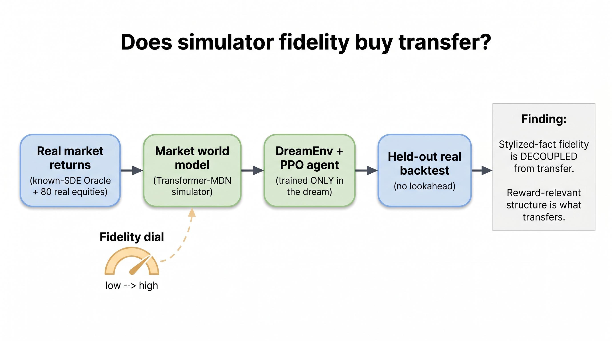
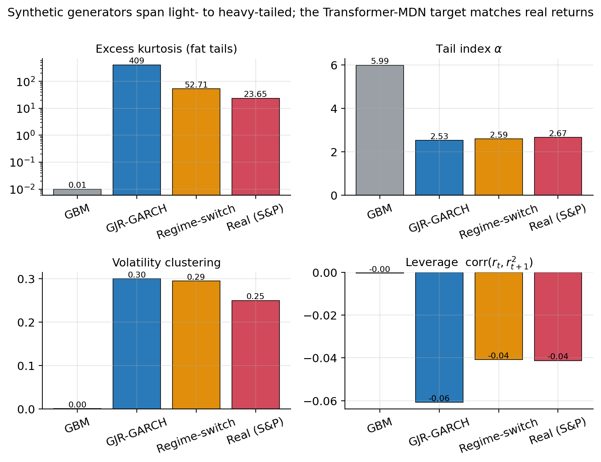
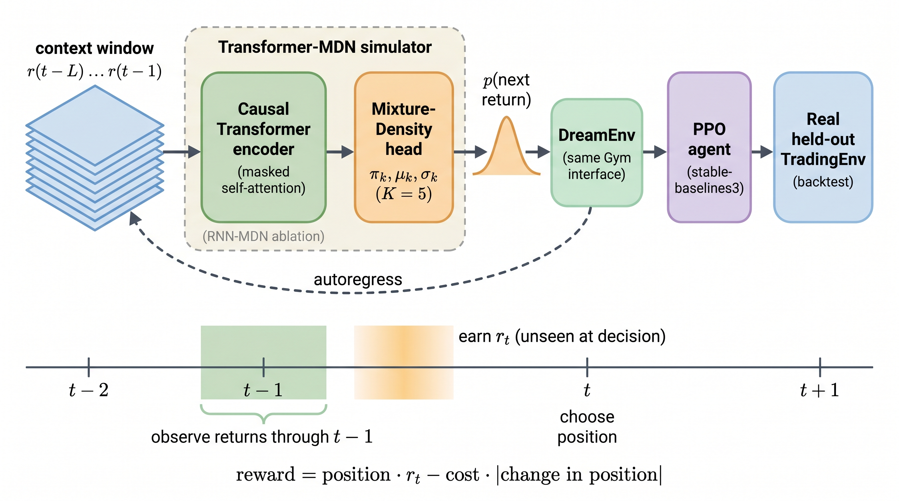
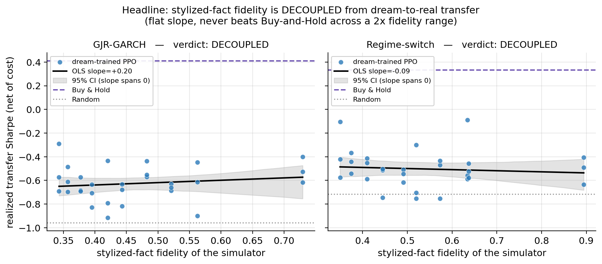
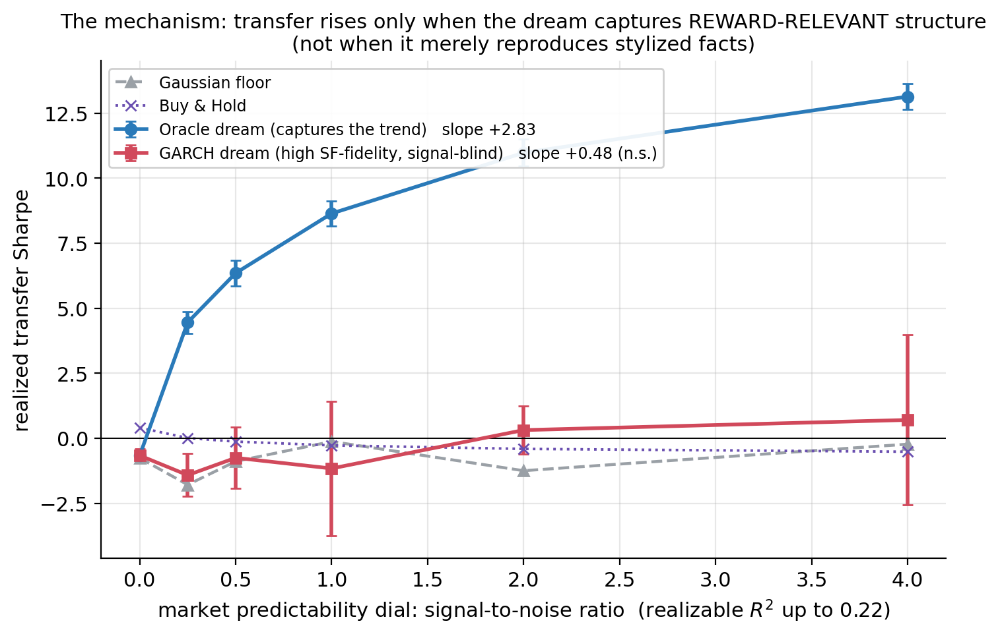
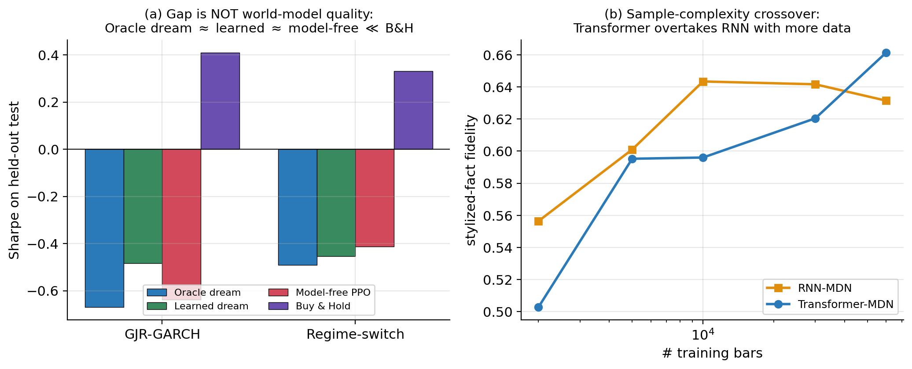
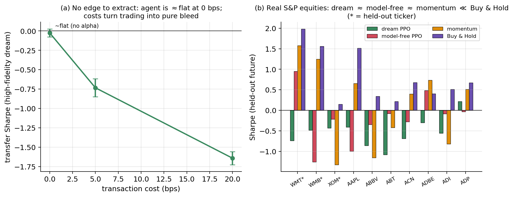

World models · Model-based RL · Algorithmic trading
A leakage-controlled diagnosis of generative market world models for reinforcement-learning trading
Prit Kudale1, Naman Dwivedi2, Raj Dandekar2, Rajat Dandekar2, Sreedath Panat2
1prit.kudale@gmail.com · 2Vizuara AI Labs
One appealing idea in AI is to train a trading agent inside a learned simulator of the market (a “dream”) instead of risking real money. A large body of work tries to make such simulators realistic by reproducing the well-known statistical signatures of returns — fat tails, volatility clustering, and the leverage effect. We ask a simple question nobody had tested: does that realism actually help the agent once it is deployed on real data? Building a carefully leakage-controlled testbed, we find that it does not: across a wide range of simulator realism, the agent’s real-world performance is flat and never beats simply buying and holding. The realism that matters for trading is not the shape of returns but their predictable direction — and standard realism metrics do not capture that. The honest bottom line is that no agent reliably beats Buy-and-Hold after costs, and we explain precisely why.

Model-based RL trains agents inside a learned simulator, or “dream,” which is attractive in finance where live exploration is costly. Yet generative-market research optimizes stylized-fact fidelity (fat tails, volatility clustering, leverage), reinforcement-learning trading research is model-free, and the two have never been connected. We ask the question at their intersection: does a market simulator’s stylized-fact fidelity predict how well an agent trained inside it transfers to real data? Using a leakage-controlled testbed — known stochastic-differential-equation Oracle markets, a dense capacity-matched fidelity dial, a no-lookahead trading environment, and a Transformer mixture-density world model — we find that across the full resolved range of fidelity the transfer Sharpe is statistically flat (regression slope confidence intervals span zero) and never beats Buy-and-Hold: stylized-fact fidelity is decoupled from transfer. A known-process decomposition shows the gap is not a world-model-quality problem; a perfect Oracle dream transfers no better, so the world-model bias is approximately zero. A controlled predictability experiment isolates the cause: when the simulator captures reward-relevant directional structure, transfer rises in lockstep (slope +2.83), whereas a stylized-fact-faithful but signal-blind GARCH dream stays flat (+0.48, not significant). On real equities the same pattern holds (dream ≈ model-free ≈ momentum ≪ Buy-and-Hold). Every number traces to a released ledger, and a Deflated Sharpe over all dial trials is insignificant.
Two research communities have been working past each other. Generative-market models are judged almost entirely by how well their samples reproduce the stylized facts of returns — properties of the return distribution and its volatility. Reinforcement-learning trading, meanwhile, is model-free and has repeatedly found that reported “profits” are artifacts of look-ahead bias and backtest overfitting. The unexamined assumption bridging them is that a more realistic simulator should make a better training environment. But trading profit depends on the conditional mean — the predictable direction of the next move — while stylized facts constrain only the shape and volatility of returns. A simulator could therefore be perfectly realistic on every stylized fact and still contain no signal an agent can trade. We test whether that gap is real, in markets, under strict leakage control.

We build markets from known stochastic differential equations, so the “Oracle” simulator is exact and data are unlimited. A scalar fidelity dial then sweeps a simulator’s realism continuously, at fixed capacity and constant volatility, from a featureless Gaussian to the Oracle. A causal Transformer with a mixture-density head learns the next-return distribution and is wrapped as a Gym environment with the same interface as the real backtest; a PPO agent is trained only on dream rollouts and evaluated on held-out data through a strictly no-lookahead trading environment. Because the Oracle is known, we can decompose the dream-to-real gap into world-model bias, finite-data error, and intrinsic non-stationarity.
Instead of comparing a few confounded models, we vary realism along one capacity-matched axis, making “does fidelity predict transfer” a falsifiable regression.
Because we know the true process, a perfect simulator exists. It lets us separate “the world model is bad” from “the task has no signal.”
Train-only normalization, no-lookahead rewards, dream rollouts seeded from train only, and a Deflated Sharpe over every trial — every number traces to a released ledger.

| Setting | Dream / Oracle | Comparator | Verdict |
|---|---|---|---|
| Fidelity→transfer (GJR-GARCH) | slope +0.20 [−0.37, 0.60] | spans 0; never beats B&H | decoupled |
| Fidelity→transfer (regime-switch) | slope −0.09 [−0.47, 0.23] | spans 0; never beats B&H | decoupled |
| Reward-relevant dial (mechanism) | Oracle slope +2.83 [2.16, 4.99] | GARCH +0.48 [−0.28, 1.49] (n.s.) | reward-relevance drives transfer |
| World-model bias (decomposition) | Oracle-dream ≈ learned-dream | bias ≈ −0.19 / −0.04 | gap is not WM quality |
| Real S&P (held-out) | dream −0.66, model-free −0.19 | Buy-and-Hold +0.63 | RL ≪ B&H after costs |
All values are annualized Sharpe (or regression slopes of transfer Sharpe on fidelity), with 95% bootstrap confidence intervals, reproducible from the released results.jsonl ledger.
Stylized-fact fidelity is decoupled from transfer. Across a two-fold range of simulator realism, the regression of real-world transfer on fidelity has a slope whose confidence interval spans zero, and the agent never beats Buy-and-Hold. Making the dream more realistic simply does not make the trader better.
The gap is not a world-model-quality problem. A perfect Oracle dream transfers no better than the learned one, and more training data raises fidelity without moving transfer. The dream-to-real gap is therefore not caused by an imperfect simulator.
Reward-relevant structure is what transfers. When we inject a learnable directional edge, a dream that captures it transfers in lockstep with the edge (slope +2.83), while a stylized-fact-faithful but signal-blind GARCH dream stays flat (+0.48, not significant) despite high realism. The same PPO that fails on realism-only markets succeeds whenever a real edge exists — so the failure is not a weak agent.
The honest real-market outcome. On real equities the dream, model-free, and a trivial momentum baseline all lose to Buy-and-Hold after costs; at zero cost the agent is flat (no alpha to extract), and a Deflated Sharpe over all trials is insignificant. There is no edge — and we now understand why.




Stylized-fact fidelity — the property generative-market models optimize — does not predict the dream-to-real transfer of an RL trading agent. Realism and usefulness are decoupled.
What transfers is reward-relevant conditional accuracy (predictable direction), not marginal realism. A simulator can be highly realistic and still useless for training a trader.
The dream-to-real gap is a task-structure problem, not a simulator-quality problem: a perfect Oracle world model transfers no better (world-model bias ≈ 0).
Under leakage control, no RL agent beats Buy-and-Hold after costs on synthetic or real markets, and a Deflated Sharpe over all trials is insignificant — a clean, honest negative result with a mechanism.
For building market world models intended for control, the right objective is reward-relevant accuracy, not stylized-fact realism.
The study is deliberately scoped: single-asset, discrete actions, and daily or synthetic frequency, leaving intraday and limit-order-book dynamics to future work. The synthetic edge in the predictability experiment is injected by construction, so its large Sharpe values are illustrative rather than tradeable. The real arm uses a current liquid universe without point-in-time membership, so its numbers are an optimistic bound supported by a cross-sectional panel bootstrap. The natural next step is to optimize world models for reward-relevant conditional accuracy directly and test whether that, unlike stylized-fact fidelity, buys transfer. This is a research proof-of-concept on historical backtests and synthetic markets, not trading advice or a live-trading system.
@misc{kudale2026fidelity,
title = {Does Simulator Fidelity Buy Transfer? A Leakage-Controlled Diagnosis of
Generative Market World Models for Reinforcement-Learning Trading},
author = {Kudale, Prit and Dwivedi, Naman and Dandekar, Raj and
Dandekar, Rajat and Panat, Sreedath},
year = {2026},
note = {Vizuara AI Labs},
url = {https://github.com/OmuNaman/dream-to-real-trading}
}